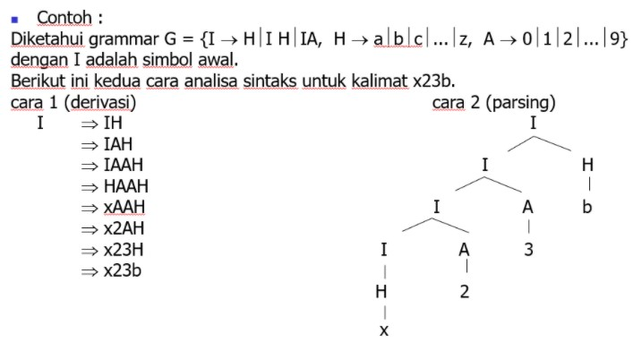
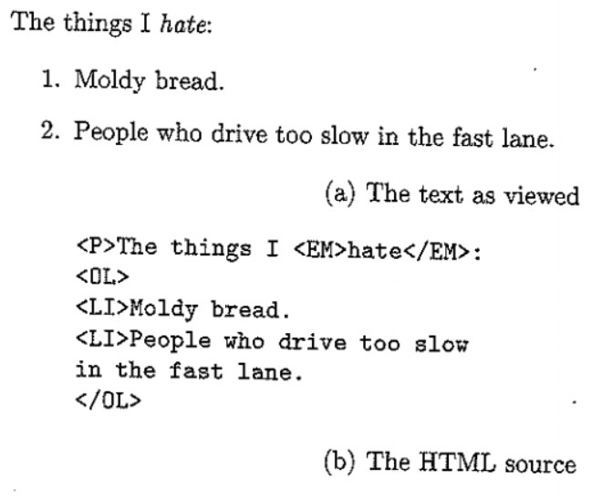
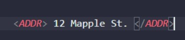
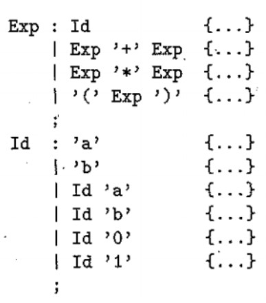

Syahril Saputra
Aplikasi Pemanfaatan Context Free Grammars
Context Free Grammars
Context Free Grammar/Tata bahasa bebas konteks (CFG) yang terdiri dari seperangkat aturan tata bahasa yang terbatas adalah quadruple (N, T, P, S) di mana :
- N adalah himpunan simbol non-terminal
- T adalah himpunan terminal dimana N ∩ T = NULL
- P adalah seperangkat aturan, P: N → (N ∪ T) *, yaitu, sisi kiri aturan produksi P memang memiliki konteks kanan atau konteks kiri
- S adalah simbol awal.
Terinspirasi dari Bahasa natural manusia, ilmuan-ilmuan computer yang mengembangkan Bahasa pemrograman turut serta memberikan grammar secara formal. Grammar ini diciptakan secara bebas-konteks dan disebut Context Free Grammar.
Dibawah ini merupakan contoh pengaplikasiannya :
Context Free Grammar (CFG) menjadi dasar dalam pembentukan suatu parser analisis sintaksis. Bagian sintaks dalam suatu compiler kebanyakan di definisikan dalam Context Free Grammar. Pohon penurunan (derivation tree) berguna untuk menggambarkan symbol-simbol variable menjadi symbol-simbol variable menjadi terminal setiap symbol variable akan diturunkan menjadi terminal sampai tidak ada yang belum tergantikan. Pada pohon penurunan, symbol awal akan menjadi akar (root). Setiap kali penurunan dipilih aturan produksi yang menuju solusi. Symbol-simbol variable akan menjadi simpul-simpul yang tidak mempunyai anak yang akan menjadi symbol terminal.

Terinspirasi dari Bahasa natural manusia, ilmuan-ilmuan computer yang mengembangkan Bahasa pemrograman turut serta memberikan grammar secara formal. Grammar ini diciptakan secara bebas-konteks dan disebut Context Free Grammar.
- Penurunan terkiri, yaitu symbol variable terkiri yang diperluas terlebih dahulu
- Penurunan terkanan, yaitu symbol variable terkanan yang diperluas terlebih dahulu
Salah satu keluarga 'bahasa' yang disebut bahasa markup. "string" dalam bahasa ini adalah dokumen dengan tanda tertentu (disebut tag) di dalamnya. tag memberi tahu kami sesuatu tentang semantik berbagai string di dalam dokumen.Bahasa markup yang mungkin paling Anda kenal adalah HTML (HypertText Markup Language). bahasa ini memiliki dua fungsi utama: mengkategorikan hubungan antar dokumen dan menjelaskan format ("tampilan") dari suatu dokumen. kami hanya akan menawarkan tampilan sederhana dari struktur dan bagaimana CFG dapat digunakan untuk menjelaskan dokumen HTML legal dan untuk memandu pemrosesan.
Contoh

Fakta bahwa HTML dideskripsikan dengan tata bahasa tidaklah luar biasa. pada dasarnya semua bahasa pemrograman dapat dideskripsikan oleh CFG-nya sendiri, jadi akan lebih mengejutkan jika kita tidak bisa mendeskripsikan HTML. namun, ketika kami melihat bahasa markup yang penting, XML (eXtensible Markup Language), kami menemukan bahwa CFG memainkan peran yang lebih penting, sebagai bagian dari proses yang menggunakan bahasa tersebut. tujuan XML bukan untuk mendeskripsikan format dokumen; itulah pekerjaan untuk HTML. sebaliknya, XML mencoba mendeskripsikan "semantik" teks. misalnya, teks seperti "12 Maple St." tampak seperti sebuah alamat, tetapi apakah? dalam XML, tag akan mengelilingi frase yang mewakili sebuah alamat; misalnya
pembuatan parses telah dilembagakan dalam perintah YACC yang muncul di semua sistem UNIX. input ke YACC adalah CFG, dalam notasi yang hanya berbeda secara detail dari yang kami gunakan di sini. Terkait dengan setiap produksi adalah aciton, yang merupakan fragmen dari kode C yang dilakukan setiap kali simpul pohon parse yang sesuai dengan produksi ini dibuat. biasanya, tindakannya adalah kode untuk membangun node itu, meskipun dalam beberapa aplikasi YACC pohon tersebut tidak benar-benar dibangun, dan actuib melakukan sesuatu yang lain, seperti memancarkan sepotong kode objek.
ini adalah contoh CFG dalam notasi YACC. kami telah menghilangkan tindakan, hanya menunjukkan tanda kurung kurawal (wajib) dan posisinya di masukan YACC
Tentang Saya